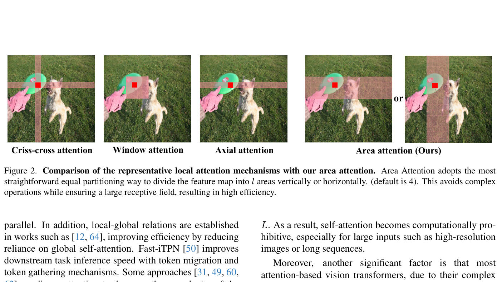
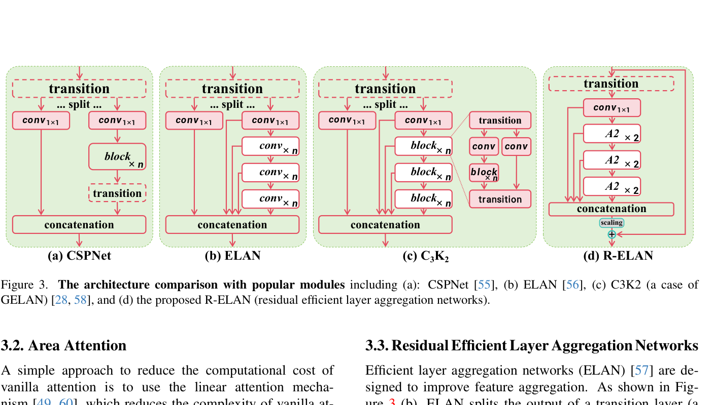
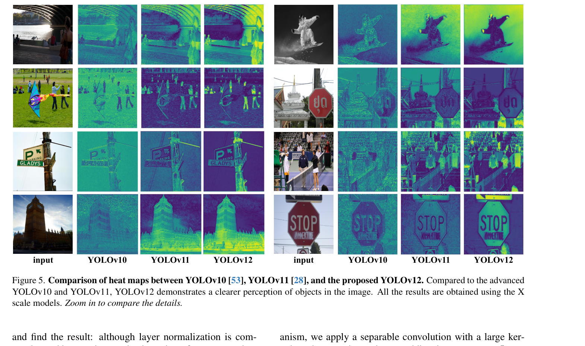

以注意力机制为核心的实时目标检测框架
尽管注意力机制在建模能力上已被证明优于CNN，但YOLO框架的架构改进长期聚焦于CNN。原因是注意力模型无法匹敌CNN的速度。
核心挑战：注意力机制的二次计算复杂度与低效内存访问，使注意力模型比CNN慢约3倍
简单高效的局部注意力模块，将特征图均匀切分为 l 个区域，大幅降低计算复杂度同时保持大感受野
残差高效层聚合网络，引入残差连接与缩放技术，解决注意力引入的优化挑战，确保大模型稳定收敛
FlashAttention加速、移除位置编码、MLP比例调整(4→1.2)、大核可分离卷积感知位置等多项改进
YOLOv12 提供 5个模型尺度 (N/S/M/L/X)，在不使用额外技巧的情况下，在所有尺度上实现 SOTA 的延迟-精度权衡
本文抛弃复杂设计，提出简洁的 Area Attention + FlashAttention 方案，实现真正实时的注意力机制
自注意力 O(L²d) vs CNN O(kLd)，其中 L 为序列长度，k 为卷积核大小（通常 k ≪ L）。全局注意力在高分辨率下计算量激增。
注意力需在SRAM与HBM间频繁搬运中间矩阵(QKᵀ, softmax)，而HBM读写速度仅为SRAM的1/10。CNN利用结构化局部内存访问天然高效。
"这两大因素——二次计算复杂度和低效内存访问——共同导致注意力机制比CNN慢约3倍。"
将 (H,W) 的特征图沿垂直或水平方向均匀切分为 l 个区域（默认 l=4），仅需简单的 reshape 操作

图：Area Attention 与其他局部注意力机制的对比（Window / Criss-Cross / Axial）

图：CSPNet → ELAN → C3K2 → R-ELAN 架构演进对比
充分利用卷积算子的计算效率，Conv2d+BN 比 nn.Linear+LN 更快且性能更好
不使用任何位置编码(RPE/APE)反而获得最佳性能，架构更简洁，推理更快
降低MLP比例，将更多计算资源分配给注意力机制，凸显Area Attention的重要性
7×7大核可分离卷积作用于value，通过平滑效果保留像素位置信息
I/O优化解决内存访问瓶颈，N模型加速约0.3ms，S模型加速约0.4ms
保留YOLO层级结构；最后阶段仅保留单个R-ELAN块，减少总块数以利于优化
MSCOCO 2017数据集
5个变体: N / S / M / L / X
640×640 输入分辨率
以 YOLOv11 为基线
600 epochs, SGD优化器
初始学习率 0.01, 线性衰减
3 epoch 线性预热
Batch size: 32×8
T4 GPU + TensorRT FP16
RTX 3080 / A5000 / A6000
CPU: i7-10700K @ 3.80GHz
mAP (AP⁵⁰:⁹⁵, AP⁵⁰, AP⁷⁵)
FLOPs & 参数量
推理延迟 (ms) — GPU/CPU
小/中/大目标AP
| Method | FLOPs(G) | #Param(M) | AP⁵⁰:⁹⁵ | AP⁵⁰ | Latency(ms) |
|---|---|---|---|---|---|
| N-Scale Models | |||||
| YOLOv8-N | 8.7 | 3.2 | 37.4 | 52.6 | 1.77 |
| YOLOv10-N | 6.7 | 2.3 | 38.5 | 53.8 | 1.84 |
| YOLOv11-N | 6.5 | 2.6 | 39.4 | 55.3 | 1.50 |
| YOLOv12-N | 6.5 | 2.6 | 40.6 | 56.7 | 1.64 |
| S-Scale Models | |||||
| YOLOv10-S | 21.6 | 7.2 | 46.3 | 63.0 | 2.49 |
| YOLOv11-S | 21.5 | 9.4 | 46.9 | 63.9 | 2.50 |
| YOLOv12-S | 21.4 | 9.3 | 48.0 | 65.0 | 2.61 |
| M/L/X-Scale Models | |||||
| YOLOv10-M | 59.1 | 15.4 | 51.1 | 68.1 | 4.74 |
| YOLOv11-M | 68.0 | 20.1 | 51.5 | 68.5 | 4.70 |
| YOLOv12-M | 67.5 | 20.2 | 52.5 | 69.6 | 4.86 |
| YOLOv11-X | 194.9 | 56.9 | 54.6 | 71.6 | 11.30 |
| YOLOv12-X | 199.0 | 59.1 | 55.2 | 72.0 | 11.79 |
YOLOv12 在所有尺度上均取得最优精度，同时保持有竞争力的推理速度
| Model | Scale | FLOPs(G) | RTX 3080 (FP32/FP16) | A5000 (FP32/FP16) | A6000 (FP32/FP16) |
|---|---|---|---|---|---|
| N-Scale | |||||
| YOLOv10 | N | 6.7 | 1.6/1.0 | 1.6/1.0 | 1.6/1.0 |
| YOLOv11 | N | 6.5 | 1.6/1.0 | 1.6/1.0 | 1.5/0.9 |
| YOLOv12 | N | 6.5 | 1.7/1.1 | 1.7/1.0 | 1.7/1.1 |
| S-Scale | |||||
| YOLOv10 | S | 21.6 | 2.8/1.4 | 2.4/1.4 | 2.4/1.3 |
| YOLOv11 | S | 21.5 | 2.8/1.3 | 2.4/1.4 | 2.4/1.3 |
| YOLOv12 | S | 21.4 | 2.9/1.5 | 2.5/1.5 | 2.5/1.4 |
| M-Scale | |||||
| YOLOv10 | M | 59.1 | 5.7/2.5 | 4.5/2.4 | 4.2/2.2 |
| YOLOv11 | M | 68.0 | 5.6/2.3 | 4.5/2.2 | 4.4/2.1 |
| YOLOv12 | M | 67.5 | 5.8/1.5 | 4.6/2.4 | 4.4/2.2 |
YOLOv12 推理速度与 YOLOv10/v11 持平，但精度更高。所有结果在相同硬件上测量。
| Model | Vanilla | Re-Aggre. | Resi. | Scaling | Convergence | FLOPs(G) | Param(M) | AP |
|---|---|---|---|---|---|---|---|---|
| YOLOv12-N | ✓ | ✓ | 6.9 | 2.7 | 40.8 | |||
| YOLOv12-N | ✓ | ✓ | 6.5 | 2.6 | 40.6 | |||
| L-Scale (大模型需要残差) | ||||||||
| YOLOv12-L | ✓ | ✗ | — | — | — | |||
| YOLOv12-L | ✓ | ✓ | 0.01 | ✓ | 88.9 | 26.4 | 53.7 | |
| X-Scale (需要极小缩放因子) | ||||||||
| YOLOv12-X | ✓ | ✗ | — | — | — | |||
| YOLOv12-X | ✓ | ✓ | 0.01 | ✓ | 199.0 | 59.1 | 55.2 | |
| Model | Area Attn | CUDA FP32 (ms) | CUDA FP16 (ms) | CPU (ms) |
|---|---|---|---|---|
| YOLOv12-N | ✗ | 2.7 / 2.5 | 1.5 / 1.5 | 62.9 |
| YOLOv12-N | ✓ | 2.0 / 2.0 | 1.3 / 1.3 | 31.4 |
| YOLOv12-S | ✗ | 5.1 / 4.4 | 2.5 / 2.2 | 130.0 |
| YOLOv12-S | ✓ | 3.5 / 3.1 | 1.7 / 1.7 | 78.4 |
| YOLOv12-X | ✗ | 26.4 / 21.9 | 11.1 / 10.4 | 804.2 |
| YOLOv12-X | ✓ | 18.2 / 14.3 | 7.1 / 6.7 | 512.5 |
CUDA 结果在 RTX 3080 / A5000 上测量，CPU 使用 i7-10700K，均未使用 FlashAttention
Conv+BN: 40.6 AP, 1.64ms
Linear+LN: 40.5 AP, 1.68ms
卷积实现比线性实现更快更优
保留4阶段: 40.6 AP
Plain ViT (N/A): 38.3 AP
层级结构对YOLO系统至关重要
600 epochs: 40.6 AP
500 epochs: 40.3 AP
YOLOv12需要更长训练周期
7×7 kernel: 40.6 AP
3×3: 40.4 / 9×9: 40.7(慢)
7×7为速度和精度的最佳平衡
不使用: 40.6 AP
APE: 40.5 / RPE: 40.3
无位置编码反而最优且更快
MLP=1.2: 53.8 AP
MLP=2.0: 53.6 / MLP=4.0: 53.1
低MLP比例将计算集中于注意力
YOLOv12 的热力图显示更清晰的目标轮廓和更精确的前景激活

图：YOLOv10 vs YOLOv11 vs YOLOv12 热力图对比（X尺度模型，第三阶段Backbone）
成功将注意力中心化设计引入YOLO框架，打破CNN在YOLO系列的统治地位，实现SOTA的延迟-精度权衡。
Area Attention降低计算复杂度、R-ELAN确保大模型收敛、多项架构优化适配实时检测场景。
5个模型尺度全系列超越主流检测器。YOLOv12-N达40.6% mAP，仅1.64ms延迟。
为更高效、更强大的YOLO系统铺平道路，推动注意力机制在实时目标检测中的广泛应用。
"This study challenges the dominance of CNN-based designs in YOLO systems and advances the integration of attention mechanisms for real-time object detection."